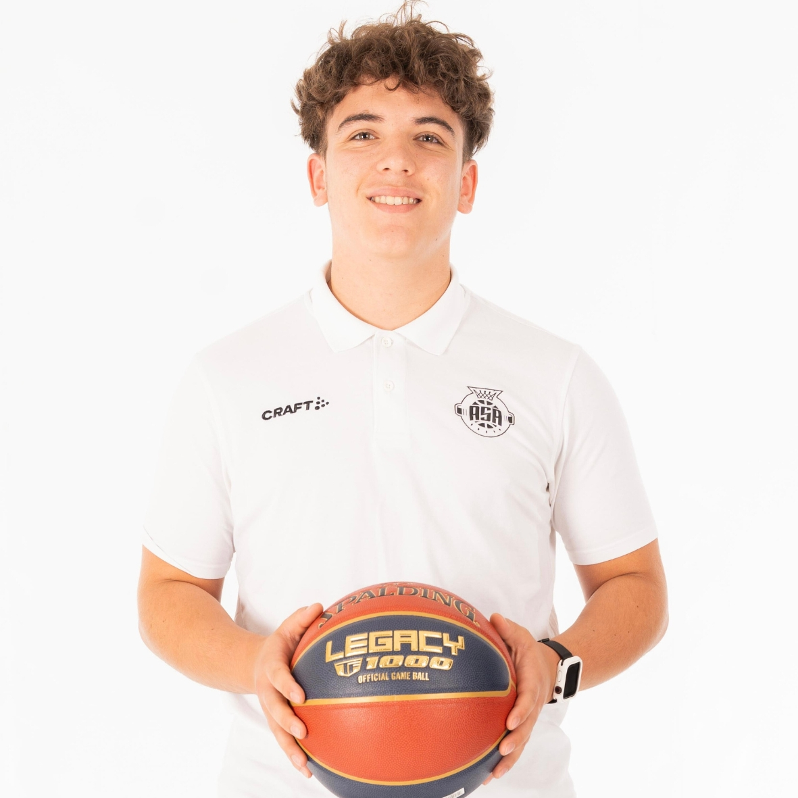

À propos
Le terrain et la donnée, ensemble
L'analyse chiffrée et vidéo reste aujourd'hui largement réservée au haut niveau, faute d'outils accessibles pour les clubs amateurs et les catégories jeunes. BaselineIQ existe pour combler ce manque.
Formé au coaching (BPJEPS Basketball), je développe en parallèle une expertise data et vidéo pour proposer une analyse de performance directement exploitable en semaine d'entraînement : profils de joueurs, dashboards d'équipe, scouting adversaire et rapports vidéo.
« Je ne suis pas un data analyst qui a appris le basket, ni un coach qui bricole des tableaux Excel. Les deux compétences sont construites ensemble, au même niveau d'exigence. »
Chaque projet du portfolio est réalisé en autonomie, avant toute formation Data Analyst formelle. La preuve par l'exemple plutôt que par le diplôme.

MAGRA Lorenzo
Analyste Performance Basketball
DiplomeBPJEPS Basketball
Basket Santé
Micro-Basket
Basket Santé
Micro-Basket
SpécialitéData & Vidéo
CibleClubs & Joueurs
OutilsPython, Excel, HTML
DisponibilitéMissions ponctuelles